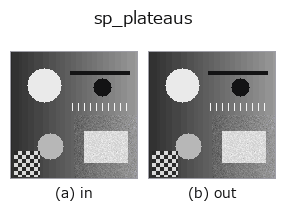

subpix op• Datenarten: image → contour
• Aufruf: fullseye.apply(img, "sp_plateaus", a=0.5, b=0.5) (das 2-D-Modell ist ein Bild plus zwei skalare Regler a,b∈[0,1])
• HALCON-Äquivalent: plateaus (Bedeutung und Parameter sind in der HALCON-Referenz nachzulesen)

*Die Abbildung ist die tatsächliche Ausgabe auf einer synthetischen 128×128-Eingabe. Links Eingabe, rechts Ausgabe. Punktwolken als Draufsicht-Streudiagramm (Helligkeit = z), 1-D-Reihen als Linie, Volumen als Maximum-Projektion entlang z, Videos als mittleres Bild, komplexe Bilder als Betrag; Rückgabewerte, die kein Bild ergeben, werden als Werte gezeigt.*
Regler a durchfahren (0,1 / 0,5 / 0,9, der andere Regler auf Standard):
▸ sp_plateaus: Regler a durchfahren (Doku-Website)
*Regler b ändert die Ausgabe nicht (gemessen: identisch bei 0,1 / 0,5 / 0,9).*
Auf anderen Bildern (synthetische Szene / Foto / Münzen. Obere Reihe: Eingaben, untere Reihe: deren Ausgaben. Regler auf Standard):
▸ sp_plateaus: andere Eingaben (Doku-Website)
*Die 4. Spalte ist eine Farb-Eingabe (H,W,3). Dieser Op verarbeitet Farbe, ohne Kanäle zu vermischen (er faltet den Farbkanal nicht als dritte Raumachse).*
Gibt den Schwerpunkt zusammenhängender flacher Regionen (Plateaus) mit gleichem (quantisiertem) Grauwert als Subpixel-Position zurück (entspricht HALCON plateaus).
Benachbarte Pixel gelten als derselbe flache Bereich, wenn sie innerhalb des Schwellwerts q = 1e-6 + 0.05*a gleich sind (Zusammenhangskomponenten per Union-Find). a variiert sowohl diese zulässige Quantisierungsbreite als auch die Mindestfläche (min_area = 2 + round(6*a); kleinere Bereiche werden ignoriert). b wird nicht verwendet. Rückgabewert ist eine CONTOUR mit 1 Punkt pro Plateau (Mittelwert der Pixelkoordinaten des Bereichs, in Pixeln). Hat die Eingabe mehr als 200,000 Pixel, wird sicherheitshalber die leere Menge zurückgegeben (Rechenaufwand-Schutz).
• Leitfaden zur Familie gallery2d_geometry
• measurement_uncertainty — Messunsicherheit und Kalibrierung — was nötig ist, um zu behaupten, dass man misst
• Katalog der Beispieldaten (Download-URLs / Lizenzen) — 2-D nutzt skimage.data (BSD/Public Domain) plus synthetische Bilder, 3-D nennt Download-URLs echter Datenquellen (Stanford, PDS, …).
• Herkunft und Literatur der Operatoren — die Quellen der Forschung/Verfahren, auf denen diese Operatorfamilie beruht.
• Der kanonische Algorithmus (Autor, Jahr) und seine Anwendungen stehen im Familienleitfaden oben.
Das Programm unten ist nachweislich lauffähig (gleiche Eingabe wie die Abbildung). In der Studio-Hilfe wird dieser Block zu Schaltflächen, die es sofort laden und ausführen.
sp_plateaus 0.50 0.50
▸ Diese Pipeline laden · Laden & ausführen
• gallery2d_geometry — py -3.11 examples/gallery2d_geometry.py
contour als Eingabe)identity · select_contours · smooth_contours · fit_line_contours · contours_to_region · count_contours · total_length · select_contours_xld
subpix)sp_local_max_sub_pix · sp_local_min_sub_pix · sp_saddle_points_sub_pix · sp_critical_points_sub_pix · sp_lowlands_center
*Provenance: ops.py — 2D Operator-Registry. Diese Notiz wird von tools/opdocs.py md erzeugt (nicht von Hand bearbeiten).*
© 2026 Kazufumi Furuse — Fullseye operator documentation. Licensed under Apache-2.0.